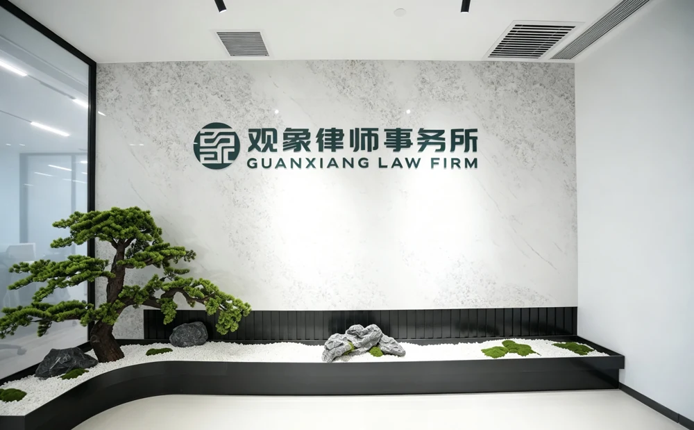

物业费、服务质量与退场交接
处理物业费争议、物业服务质量纠纷，以及物业服务合同解除、退场与交接争议。
我是吴瑞祥，观象律师事务所创始合伙人。曾在物业集团法务部工作，现在专注代理业主、业委会及其他业主组织的物业法律事务。
我是一名专注于物业管理法律服务的执业律师，执业十年来，一直深耕在物业管理法律服务领域。我的服务出发于法律而不局限于法律，亲自在物业一线参与各类实操工作和业主组织建设工作，是我能够提供更优质服务的底气。观象律师事务所创始合伙人、高级合伙人，毕业于山东大学法学专业，曾任职于司法行政部门，并在法院担任审判助理，对司法实务与行政管理有着深刻理解。
执业以来，我深耕物业管理法律领域，长期服务于业主、业主委员会、筹备组、物业管理委员会等业主组织。曾在物业集团法务部任职、长期处理物业公司一方事务，深知物业运营逻辑与诉讼套路——这份"懂内幕"的经历，是我帮业主维权的底气。
我相信法律服务的价值在于解决问题、预防风险，而非制造矛盾。每一个案件、每一次咨询，我都力求站在客户角度，提供务实、高效、可落地的解决方案。
按你正在处理的问题，查看可委托事项和相关资料。
重点案例 · 专项维修资金
152.5万元获准强制执行
查看办案经过共有部位权属
公建配套返还
房屋买卖合同纠纷 · 共有部位
网络侵权责任纠纷 · 业主名誉权
案件结果取决于个案事实、证据和裁判。
